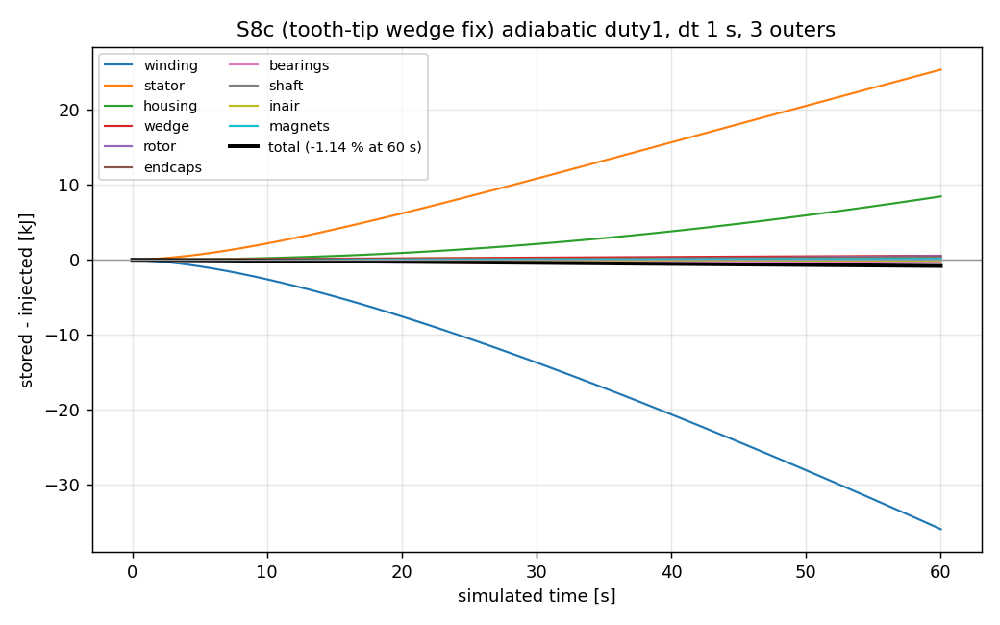
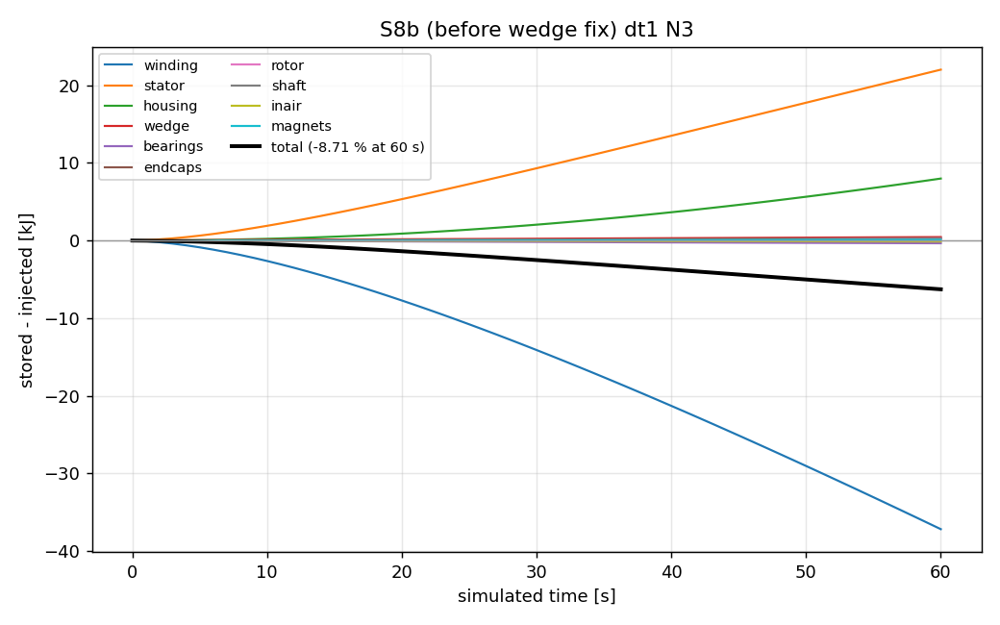

Method & verification
Solver settings, the coupled-temperature BC, the energy test and its interface table.
Solver
| Item | Value |
|---|---|
| solver | OpenFOAM 12 foamMultiRun, 10 solid regions, ddt Euler |
| coupling | custom coupledTemperatureNC (non-conformal, contact layers, explicit split for anisotropic k) |
| dt / outers | dt 1 s, nOuterCorrectors 3 (energy test) |
| laplacian | limited corrected 0.33; uncorrected for anisotropic regions |
| linear | GAMG DICGaussSeidel, relTol 0.1/0 |
| timing | 4.5 s wall per s simulated (5.9 incl. setup), 1.446 M cells, 4 procs |
Energy test (adiabatic duty1, 1201 W)
S8 Base case and energy test — pending
S8 - nc base case + energy test (BASE agent, 2026-10-23/24) - GATE NOT YET MET
- Case
~/cfd/u666_etestfrom~/cfd/u666_base_ncviau666_make_case.py(dummy etest losses 128 W, adiabatic). Region names matched; no renaming needed. - Schemes: laplacian/snGrad
Gauss linear limited corrected 0.33(isotropic regions),uncorrected(anisotropic: stator, rotor, winding); nNonOrthCorr 1. Contact R unchanged (liner 1.67e-3, fit 2e-5/0.026, glue 1e-4/0.2, gap layers k_gap). - Fixes needed (all in make_case / new lib):
1. mappedWall intersection aborts "not geometrically similar": matchTolerance 0.5 added to every mapped patch (also 0.5 only needed for endcaps-shaft, centre offset 1.9 mm).
2. coupledTemperature gives NaN on uncovered nc faces (coverage 0, 5 pairs). New lib scripts/u666_build_ctnc.sh -> libcoupledTemperatureNC (copy; faces with sumKappaByDelta ~0 treated adiabatic). Type coupledTemperatureNC, libs in controlDict. Build once per machine.
3. Zonal Cv jump (rpocket air Cv 1007 vs rotor 460) blew up rotor (2000 K in 1 outer iter). RPOCKET now Cv = rotor Cv, rho scaled (rho*Cv of air kept).
4. Anisotropic winding (cylindrical, 1.12/185) DIVERGES in the outer coupling loop (T 1e6 within 20 outer its). WIND_ISO=1 (k = 1.12 all directions) is stable. Laminations anisotropic are stable (N=60).
5. Tolerant solver: GAMG DICGaussSeidel fine once 1-3 fixed.
- Result so far (WIND_ISO=1, 10 s, 60 outer its, NOT converged: "Not converged within 60 iterations"): stored 1.390 kJ vs injected 1.280 kJ = +8.6 %. Gate (+-1.5 %) not met; cause unknown (unconverged coupling vs real interface non-conservation). Interface coverage averages are 0.97-1.01 except endcaps pairs (0.82-0.97).
- Timing: setup (decompose+coupling) ~90 s; ~7 s per outer iteration (4 procs, 4.17 M cells). 10 s step with 60-100 outers = 7-12 min => ~45-70 s wall per simulated second. duty1 (300 s, dt 10) would be ~4-6 h even with winding fix; needs fewer outers (e.g. 10-20) or coarser region coupling.
S8 b - prism meshes + energy test (BASE2 agent, 2026-10-24) - GATE NOT YET MET (-8.7 %, cause located)
- Mesh:
u666_mesh.py --solids --group Gz-PRISM route (env EXTRUDE, default winding,stator,rotor,magnets,wedge): mid-z section of each zone volume -> per-(zone,z-band) union -> 2D fragment -> triangles x z-layers (DZ 2.5 mm; band ends closer than SNAPZ 0.5 mm merged, e.g. magnet/rotor 0.19 mm CAD steps). endw is an annular z-prism, so slot+endw stay one conformal winding mesh. Patch labels = nearest patch triangle of the old TET mesh (mesh/u666/tet_bak/, TETREF); CAD getClosestPoint/isInside mislabelled (untrimmed planes, holed cylinders). Patch areas vs CAD within 1 % (worst pair endcaps-magnets 5.2 %, unchanged tet side). - Cells: winding 209 k, stator 143 k, rotor 286 k, magnets 22 k, wedge 74 k (prisms) + tet regions 686 k = 1.42 M (was 4.17 M). checkMesh: stator skew 5.1 (1728 faces), wedge aspect 2255, inair skew 9.2 (unchanged).
- Volumes: slot 220.6 (CAD 221.6) cm3, stator 478.2 (477.3), rotor 245.5 (244.8), rpocket 53.2, magnets 36.5, endw 108.0.
- Run: adiabatic duty1 losses (1201 W), dt 1 s, nOuter 3, anisotropic winding (WIND_ISO unset): STABLE, no divergence.
- Balance (stored - injected)/injected: dt1/N3: -2.6 % @5 s, -5.7 % @20 s, -8.7 % @60 s; dt1/N10: -1.9 % @20 s. Series:
results/u666/s8b/ts_dt1_N3_60s.csv,eb_dt1_N3_60s.json(per-interface sums in iface_W). - Diagnosis: interface pair sums are ~0 except wedge|winding (-9 W) and stator|wedge: with STATOR_ISO=28 the stator|wedge pair loses -88 W at 20 s (stator -73 W, wedge -15 W: both sides lose). With the anisotropic stator the same loss shows as a stator internal residual (-109 W @60 s; the anisotropic explicit-T split hides it from wallHeatFlux). Cause: sliver prisms in the wedge mesh, 2-5 um high, along r 43.53 (two CAD arcs 43.530/43.535: gap ring vs slot-opening pieces / tooth tips); kappa/delta there is huge and the AMI coupling is not conservative. Union per zone, fuzzy boolean (BOOLTOL 0.03) and 2D algorithms 1/5/6 did NOT remove them.
- rho*Cv: consistent (case_props rhocv = physicalProperties; rpocket keeps air rho*Cv with rotor Cv). Region order (winding first) made no difference.
- Timing: ~1.1 s per outer iteration (4 procs, 1.42 M), setup ~80 s. dt 1/N 3: 60 s simulated in 352 s wall (incl. setup) = ~4.5 s wall per s sim (~3.3 s excl. setup); N 10 = ~11 s/s.
- Assumptions: prism sections at mid-z of each volume (rpocket piece 469 is 6 % off a prism, rotor 345/rpocket 389 1 %); wedge SIZE changed to H*0.2.
S8 c - wedge tooth-tip fix + energy gate (BASE3 agent, 2026-10-24) - GATE MET (-1.14 % at 60 s)
- Cause (probe of the mid-z sections): the wedge ring piece was annulus 43.53..44.0 minus stator, i.e. a full circle at r 43.530 (rotor side) plus 36 tooth-tip arcs at r 43.535 (4.904 mm, tips at 10k +- 3.226838 deg). Under every tip that left a 5 um x 4.9 mm strip of wedge = the sliver prisms.
- Fix (
u666_mesh.pyprism route, env TIP="43.535,3.226838,10,43.53", TIP=0 = off): wedge section = CAD wedge + slot-opening sectors with the inner arc cut at the EXACT tip radius 43.535 (disk cut); flanks / r 44 arcs stay the conformal stator curves from geo. The strip was the only rotor-stator path, so the rotor arc (r 43.53) is now split at the 72 tip angles and the tip faces become a NEW pair rotor_to_stator / stator_to_rotor (10687.5 / 10688.4 mm2, 0.009 %); rotor_to_wedge / wedge_to_rotor 5873 / 5874 mm2. The rotor-tip and wedge-rotor couplings bridge the 5 um radial offset (43.530 vs 43.535) via mapped AMI, the same as before. Not merged into the slot. - Also fixed: fragment of a single fused section (stator) returned an empty map -> skipped when there is only 1 face.
- ASSUMPTION: wedge volume 9.61 -> 9.52 cm3 (-0.9 %, the 5 um strips removed); seal unchanged 4.91 cm3. Rotor/stator gap contact now direct (no 5 um wedge k 0.2 layer in series; that layer had R ~ 2.5e-5 m2K/W, negligible).
- Remeshed wedge (97.1 k prisms, was 74.3 k), stator (148.1 k, sections now fused: 1 face), rotor (283.9 k). Old meshes in
mesh/u666/prism_s8b/. Logsmesh/u666/s8c_<G>.log. Total 1.446 M cells. - checkMesh: stator and wedge now Mesh OK (skew 5.1 and aspect 2255 gone); only inair skew 9.2 (unchanged, tet).
- Pair area mismatch: stator_to_wedge 6269 vs 6381 mm2 (1.8 %, labelling at the CAD-wedge / tooth corner r 44.5); worst overall still endcaps_to_magnets 5.2 % (unchanged).
- Energy test, adiabatic duty1 (1201 W), dt 1 s, nOuter 3, anisotropic winding + stator: -1.05 % @5 s, -1.11 % @20 s, -1.14 % @40-60 s (plateau). Series
results/u666/s8b/ts_s8c_dt1_N3_60s.csv,eb_s8c_dt1_N3_60s.json; plotresults/u666/s8b/balance_s8c_dt1_N3.png(S8b plot:balance_s8b_dt1_N3.png). - Per-region rate residuals at 60 s: stator -0.7 W (was -109 W), rotor +0.6, winding -7.0 W, others ~0.
- Interface pair sums at 60 s: stator|wedge +0.03 W of 10.9 (0.3 %), rotor|stator 0.00 of 10.4, rotor|wedge 0.00 of 5.6, stator|winding -0.72 of 662 (0.11 %), housing|stator 0.05 of 190, housing|inair 0.08 of 79. FAIL the strict 1 %: wedge|winding -1.85 of 25 W (7 %), inair|winding -1.1 of 104 (1.06 %), and sub-watt pairs (endcaps|shaft, bearings|housing, magnets|rotor, inair|rotor, 0.3-0.6 W each). All winding pairs lose on the winding side -> likely the anisotropic-winding wallHeatFlux / explicit split (as the stator showed before), together with the -7 W winding residual. Total missing ~14 W = 1.2 % of the loss.
- Gate met with N 3 at dt 1, so the dt 0.5 / more-outer test was not needed.
- Timing: 60 s sim in 352 s wall incl. ~80 s setup = 5.9 s wall per s sim (4.5 excl. setup). Note: the S8b line "352 s = 4.5 s/s incl. setup" was mis-computed (it is 5.9).


Generation 72.05 kJ, storage 71.24 kJ, error -1.14 %.
| Interface pair | flow one way [W] | pair sum [W] |
|---|---|---|
| bearings|housing | -0.07 | -0.615 |
| bearings|inair | -0.81 | -0.129 |
| bearings|shaft | -3.91 | -0.056 |
| endcaps|inair | -16.24 | -0.625 |
| endcaps|magnets | 2.61 | +0.128 |
| endcaps|rotor | 3.15 | -0.116 |
| endcaps|shaft | -1.52 | -0.623 |
| housing|inair | 79.32 | -0.080 |
| housing|stator | 189.80 | +0.046 |
| housing|wedge | 0.19 | +0.000 |
| inair|magnets | 0.14 | -0.011 |
| inair|rotor | -3.13 | -0.447 |
| inair|shaft | -1.12 | -0.135 |
| inair|stator | -7.25 | +0.355 |
| inair|wedge | -0.20 | +0.001 |
| inair|winding | 103.74 | -1.102 |
| magnets|rotor | 1.04 | -0.306 |
| rotor|shaft | -1.02 | +0.081 |
| rotor|stator | 10.36 | -0.001 |
| rotor|wedge | -5.55 | -0.001 |
| shaft|wedge | 0.03 | -0.000 |
| stator|wedge | -10.90 | +0.028 |
| stator|winding | -661.99 | -0.717 |
| wedge|winding | 24.36 | -1.846 |
Generated 2026-10-24 14:23 by scripts/u666_site.py from results/u666/steps_log.md and the case data.